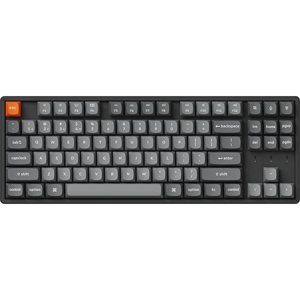
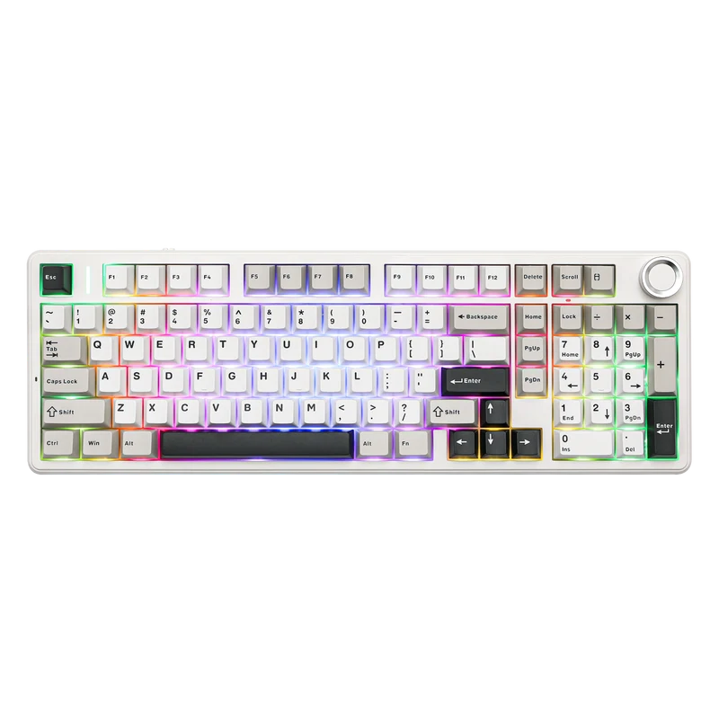
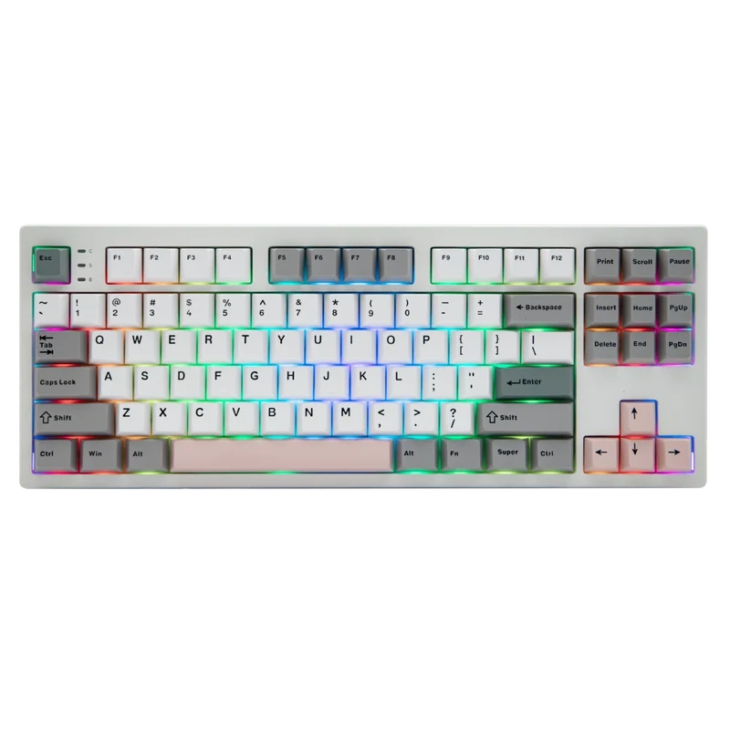
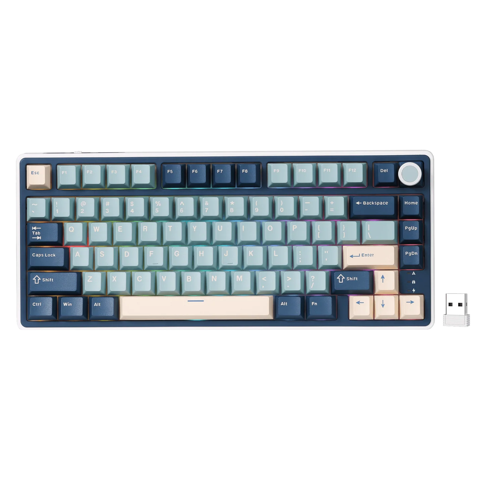
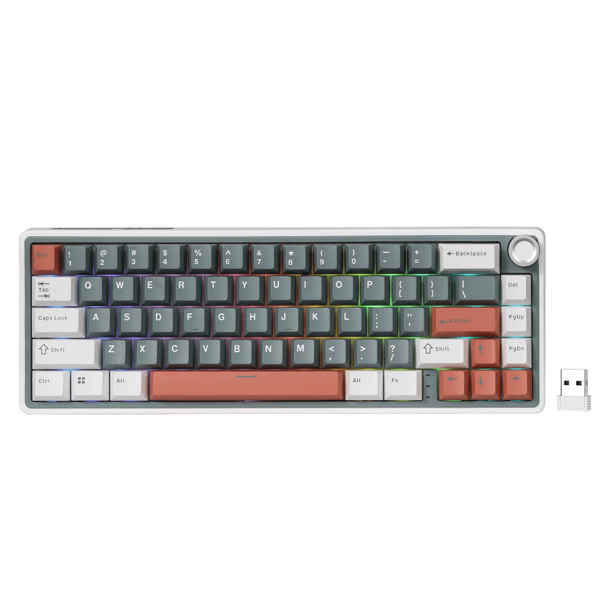
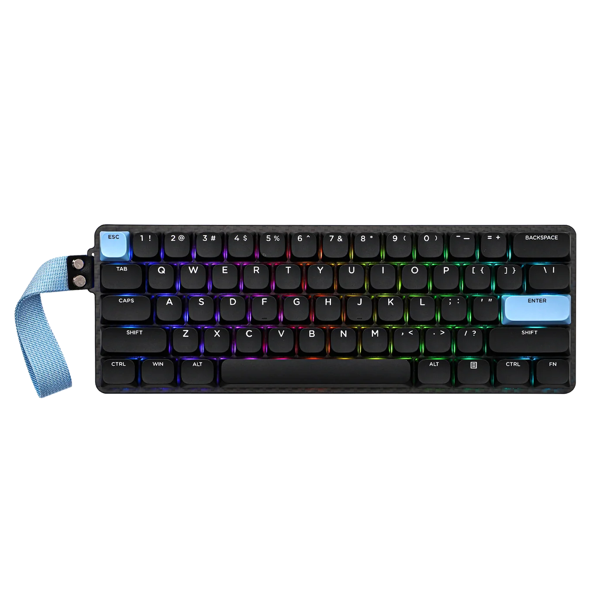
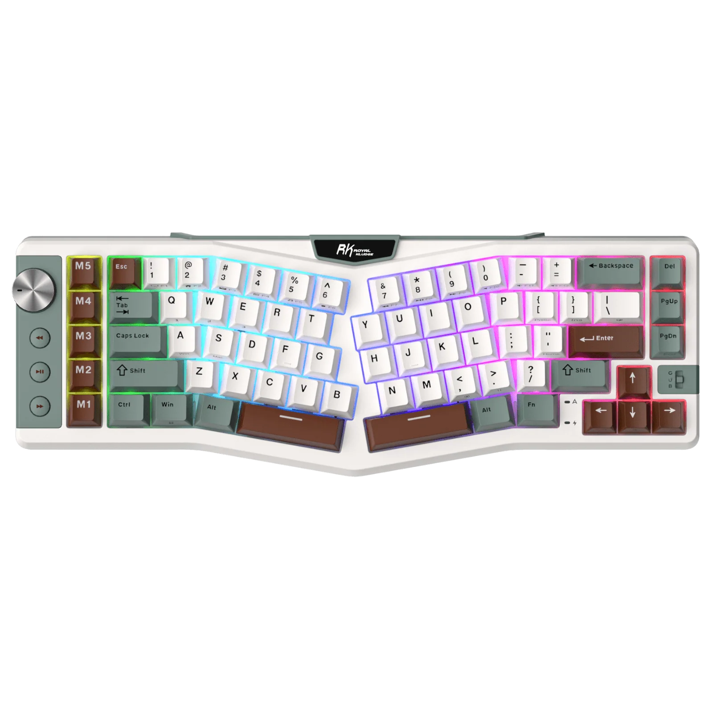

Layouts
Layouts
| 100% |

| 96% |

| 80% |

| 75% |

| 65% |

| 60% |

| Special |

| Layout | Number of Keys | Description |
|---|---|---|
| 100% | 104-108 keys | Full sized keyboard with number pad. |
| 96% | 96-104 keys | Almost full but it is more compact then a full sized keyboard. |
| 80% | 87-88 keys | Keyboard without a number pad. |
| 75% | 81-87 keys | Compact keyboard with function row and arrow keys. |
| 65% | 66-68 keys | Compact keyboard and function is merged with number row with arrow keys. |
| 60% | 58-65 keys | Small keyboard that may or may not have function abilities and it's without arrow keys. |
| Special | Varies | Unique to customer details, more customizable and depending on company. |
Each layout has its own advantages and is suited for different types of users. 100% is a full sized keyboard and it reduces in size. Most people go for 60%-75% for the amount of keys on the board and helps with desk space. Choose the one that fits your typing style and workspace requirements.